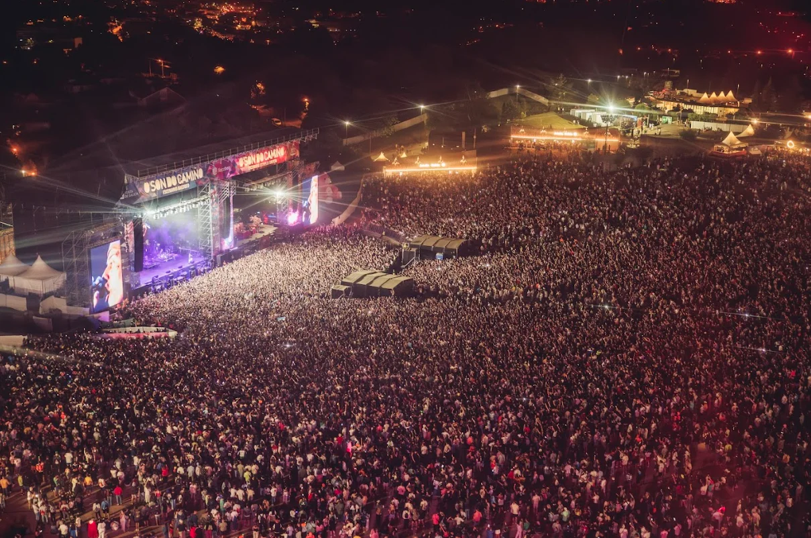
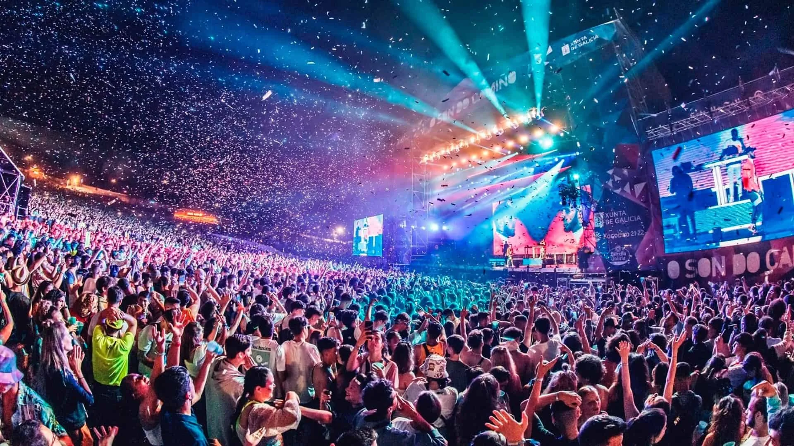

El Resurrection Fest es uno de los festivales de música extrema más importantes de Europa, celebrado en Viveiro, Galicia. Reúne a miles de fans del metal, hardcore y punk, con una cartelera repleta de bandas internacionales de renombre. Ofrece una experiencia única con varios escenarios, actividades paralelas y zonas de acampada. Además de la música, cuenta con exhibiciones de deportes extremos y sesiones especiales como meet & greets con las bandas.
Horarios
El festival se celebra durante tres días, con conciertos desde la tarde hasta altas horas de la madrugada.
- Día 1: Apertura de puertas a las 16:00h
- Día 2: Inicio de conciertos a las 14:00h
- Día 3: Últimos conciertos hasta las 03:00h
Ubicación
El Resurrection Fest se lleva a cabo en Viveiro, un hermoso pueblo costero de Galicia.
- Zona de acampada disponible con diferentes niveles de comodidad.
- Opción de transporte oficial desde distintas ciudades.
- Normativa sobre seguridad y acceso al recinto.
- Variedad de opciones gastronómicas y merchandising oficial.


